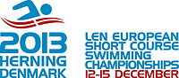

2013 European Short Course Swimming Championships
From Wikipedia, the free encyclopedia
| 2013 European Short Course Swimming Championships | |
|---|---|
|  | |
| Host city | Herning, Denmark |
| Date(s) | 12â15 December |
| Venue(s) | Jyske Bank Boxen |
| Nations participating | 42 |
| Athletes participating | 559 |
| Events | 40 |
{kind=link}
The 2013 European Short Course Swimming Championships took place in Herning, Denmark, from 12â15 December 2013.
Contents
[hide]Results[edit]
Men's events[edit]
Legend: WR â World record; WBT â World best time; ER â European record; CR â Championship record
- Vitaly Melnikov originally won gold, but following his disqualification for doping offences, the medals in the event were upgraded.[1]
Women's events[edit]
Legend: WR â World record; WBT â World best time; ER â European record; CR â Championship record
Mixed events[edit]
| Event | Gold | Silver | Bronze | |||
|---|---|---|---|---|---|---|
| 4 Ã 50 m Mixed Freestyle | Sergey Fesikov Vladimir Morozov Rozaliya Nasretdinova Veronika Popova |
1:29.53 WR |
Luca Dotto Marco Orsi Silvia Di Pietro Erika Ferraioli |
1:30.26 | Netherlands Inge Dekker Joost Reijns Sebastiaan Verschuren Ranomi Kromowidjojo |
1:30.62 |
| 4 Ã 50 m Mixed Medley | Christian Diener Caroline Ruhnau Steffen Deibler Dorothea Brandt |
1:39.32 | Simona Baumrtová Petr BartůnÄk Lucie SvÄcená Tomáš Plevko |
1:39.54 | Niccolo' Bonacchi Francesco Di Lecce Ilaria Bianchi Erika Ferraioli |
1:39.68 |
Medal table[edit]
Host nation
| Rank | Nation | Gold | Silver | Bronze | Total |
|---|---|---|---|---|---|
| 1 | 8 | 4 | 3 | 15 | |
| 2 | 5 | 3 | 2 | 10 | |
| 3 | 4 | 4 | 1 | 9 | |
| 4 | 4 | 0 | 0 | 4 | |
| 5 | 3 | 3 | 0 | 6 | |
| 6 | 3 | 0 | 0 | 3 | |
| 7 | 2 | 5 | 7 | 14 | |
| 8 | 2 | 5 | 3 | 10 | |
| 2 | 5 | 3 | 10 | ||
| 10 | Netherlands | 2 | 1 | 3 | 6 |
| 11 | 2 | 0 | 2 | 4 | |
| 12 | 1 | 3 | 0 | 4 | |
| 13 | 1 | 2 | 0 | 3 | |
| 14 | 1 | 0 | 1 | 2 | |
| 1 | 0 | 1 | 2 | ||
| 16 | 0 | 4 | 5 | 9 | |
| 17 | 0 | 1 | 0 | 1 | |
| 0 | 1 | 0 | 1 | ||
| 19 | 0 | 0 | 5 | 5 | |
| 20 | 0 | 0 | 1 | 1 | |
| Ireland | 0 | 0 | 1 | 1 | |
| Portugal | 0 | 0 | 1 | 1 | |
| Total | 41 | 41 | 39 | 121 | |
On 13 May 2014 Russian swimmer Yuliya Yefimova was officially suspended for doping use and lost 4 gold and 1 silver medals.[2][3][4] Another Russian swimmer Vitaly Melnikov was banned in May 2015, which resulted in a loss of an individual silver and two relay gold medals for Russia.[5]
Participating nations[edit]
577 swimmers from 39 countries swam at the 2013 edition.[6]
|
|
References[edit]
- ^ Jump up to: a b Walker Hebborn upgrades to silver - BBC
- Jump up ^ "Russian Olympic Medal-Winning Swimmer Yefimova Fails Doping Test â Report". russianews.net. 7 January 2014
- Jump up ^ "Russian Olympic Medal-Winning Swimmer Efimova Fails Doping Test â Report". ria.ru. 17 January 2014.
- Jump up ^ "Russian swimmer Yulia Yefimova disqualified for 1 year and 4 months for doping". ITAR-TASS. 13 May 2014.
- Jump up ^ Russian swimmer Vitaly Melnikov banned for doping. Fox Sports. 16 March 2015
- Jump up ^ LEN: European Short Course Championships Herning, 12. â 15.12.2013. herning2013.com
External links[edit]
|
||